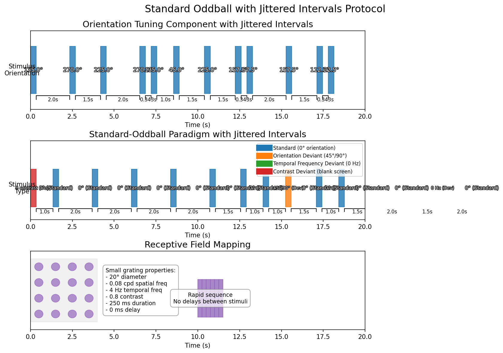

Standard Oddball Stimulus with Jittered Intervals
Overview
The Standard Oddball Stimulus with Jittered Intervals is an enhanced version of the standard oddball paradigm that introduces predetermined but variable inter-stimulus intervals.
Stimulus Structure

The figure above illustrates the three main components of the standard oddball jitter random protocol:
-
Orientation Tuning Component: 16 different orientations (0°-337.5° in 22.5° steps) presented with 4 different inter-stimulus intervals (0.343s, 1s, 1.5s, 2s). The sequence is randomized to prevent predictability.
-
Standard-Oddball Component:
- Regular presentations of the standard stimulus (0° orientation)
- Occasional presentations of deviant stimuli:
- Orientation deviants (45° and 90°)
- Temporal frequency deviant (0 Hz, stationary)
- Contrast deviant (blank screen)
-
All with variable intervals between stimuli
-
Receptive Field Mapping: Small, localized gratings presented at positions defined in the receptive field CSV file.
The jittered intervals between stimuli help distinguish neural responses to stimulus features from responses to predictable timing.
Script Location
The stimulus script is located at:
- /code/stimulus-control/src/Standard_oddball_slap2_jitter_random.bonsai
Hardware Requirements
- SLAP2 imaging system
- Behavior device with encoder/wheel for tracking animal movement
- Digital outputs (DO2) for synchronization with recording equipment
Stimulus Parameters
Basic Parameters
- Display Type: Drifting gratings
- Spatial Frequency: 0.04 cycles per degree
- Temporal Frequency: 2 Hz (standard)
- Contrast: 1.0 (full contrast)
- Size: 360° (full-field gratings)
- Stimulus Duration: 343 ms (fixed)
- Inter-stimulus Intervals: Four predefined values (0.343s, 1s, 1.5s, 2s)
Configurable Parameters
The script contains several externalized parameters that can be adjusted:
- NbBaselineGrating: Number of standard gratings (default: 20)
- NbMismatchPerCondition: Number of repetitions for each deviant condition (default: 1)
- NbReceptiveFieldRepeats: Number of repetitions for receptive field mapping (default: 1)
Experimental Design
1. Orientation Tuning Component with Jittered Intervals
This experiment includes presentation of 16 different orientations (0°, 22.5°, 45°, etc.) with a systematic jitter implementation:
- Each orientation is paired with each of the four possible inter-stimulus intervals (0.343s, 1s, 1.5s, 2s)
- This creates 64 unique orientation-delay pairs (16 orientations × 4 delays)
- The entire set of these pairs is randomized using a permutation algorithm
- This ensures each orientation is shown at each possible delay, but the sequence is unpredictable
The jitter is not randomly chosen at runtime; instead, each orientation appears four times in the randomized sequence, each time with a different predefined delay.
2. Standard-Oddball Paradigm
The core of the experiment consists of:
- Standard Stimulus: 0° orientation grating with 2 Hz temporal frequency (repeated ~20 times)
- Deviant Stimuli:
- Orientation deviants: 45° and 90° oriented gratings
- Temporal frequency deviant: 0 Hz (stationary grating at 0° orientation)
- Contrast deviant: 0 contrast (blank screen) with 2 Hz temporal frequency
The jittered intervals break the rhythmic presentation pattern found in the standard oddball paradigm, which helps isolate responses to stimulus features from responses to stimulus timing.
3. Receptive Field Mapping
The experiment includes a mapping component with smaller gratings (20° diameter) presented at locations defined in receptive_field.csv. These specialized mapping gratings have:
- Higher spatial frequency (0.08 cpd)
- Higher temporal frequency (4 Hz)
- Higher contrast (0.8)
- Shorter duration (250 ms)
- No inter-stimulus interval (0 ms delay)
Data Collection
The script logs all stimulus parameters and timing information to CSV files:
- orientations_logger.csv: Contains timing of stimulus events
- vstimLog.csv: Records the detailed parameters of each stimulus presentation, including the specific delay used for each stimulus
Animal running data is collected via an encoder on Port 2 of the behavior device.
Synchronization
- TTL pulses (100ms) are generated at stimulus onset via DO2 output
- SLAP2 recording is automatically started and stopped during the experiment
Running the Experiment
- Start the Bonsai workflow
- Press the spacebar to begin the experiment
- The experiment can be terminated with the End key
Related Documents
- Standard Oddball: Information about the standard oddball paradigm with fixed intervals
- Bonsai Instructions: Setup and deployment of Bonsai code
- Experimental Plan: Overview of all experimental paradigms
- SLAP2 Hardware: Details about the SLAP2 imaging system used